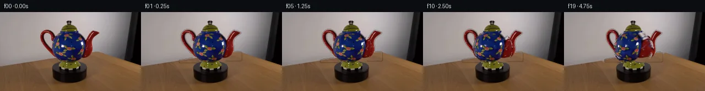

![首帧]()

Round 00
2026-11-05T10:21:34.152099+00:00像素候选变化代码 +199/−0inspection 更新
pixels 4c3b6b703d63bba2 · code f500de8b7f2e2032
查看本轮 generate.py 真实 diff
--- previous/generate.py +++ current/generate.py @@ -0,0 +1,199 @@ +from pathlib import Path + +import cv2 +import numpy as np +from PIL import Image, ImageDraw + +import artifact_io + + +ROOT = Path(__file__).resolve().parent +W, H = 256, 144 + + +def soft_mask(mask: np.ndarray, sigma: float = 0.65) -> np.ndarray: + """Return a lightly feathered 0..1 mask without materially growing it.""" + a = cv2.GaussianBlur(mask.astype(np.float32), (0, 0), sigma) + return np.clip(a, 0.0, 1.0) + + +def composite(dst: np.ndarray, layer: np.ndarray, alpha: np.ndarray) -> np.ndarray: + a = alpha[..., None].astype(np.float32) + return np.clip(dst.astype(np.float32) * (1.0 - a) + layer.astype(np.float32) * a, 0, 255).astype(np.uint8) + + +def red_part_mask(rgb: np.ndarray, box: tuple[int, int, int, int]) -> np.ndarray: + """Segment a red glazed side part and retain its dark painted outline.""" + x0, y0, x1, y1 = box + r, g, b = [rgb[..., i].astype(np.int16) for i in range(3)] + seed = (r > 52) & (r > g * 1.14) & (r > b * 1.10) & ((r - np.minimum(g, b)) > 18) + allowed = np.zeros((H, W), np.uint8) + allowed[y0:y1, x0:x1] = 1 + seed_u8 = (seed.astype(np.uint8) & allowed) * 255 + + close_kernel = cv2.getStructuringElement(cv2.MORPH_ELLIPSE, (3, 3)) + core = cv2.morphologyEx(seed_u8, cv2.MORPH_CLOSE, close_kernel) + near = cv2.dilate(core, np.ones((3, 3), np.uint8), iterations=1) > 0 + dark_outline = near & (np.max(rgb, axis=2) < 105) & (allowed > 0) + mask = ((core > 0) | dark_outline).astype(np.uint8) + # One pixel of antialiased glazed edge is important at this resolution. + mask = cv2.dilate(mask, cv2.getStructuringElement(cv2.MORPH_ELLIPSE, (3, 3)), iterations=1) + return mask + + +def affine_part(layer: np.ndarray, alpha: np.ndarray, anchor: tuple[float, float], + sx: float, sy: float, dy: float) -> tuple[np.ndarray, np.ndarray]: + ax, ay = anchor + mat = np.array([[sx, 0.0, ax * (1.0 - sx)], + [0.0, sy, ay * (1.0 - sy) + dy]], dtype=np.float32) + warped_layer = cv2.warpAffine(layer, mat, (W, H), flags=cv2.INTER_CUBIC, + borderMode=cv2.BORDER_CONSTANT, borderValue=(0, 0, 0)) + warped_alpha = cv2.warpAffine(alpha, mat, (W, H), flags=cv2.INTER_CUBIC, + borderMode=cv2.BORDER_CONSTANT, borderValue=0) + return warped_layer, np.clip(warped_alpha, 0.0, 1.0) + + +def build_surface_layers(source: np.ndarray): + """Separate body paint marks from the camera-fixed blue illumination.""" + yy, xx = np.mgrid[0:H, 0:W] + ellipse = (((xx - 126.0) / 36.2) ** 2 + ((yy - 65.8) / 35.5) ** 2) <= 1.0 + # The base ring begins at the bottom and should not be treated as blue body. + ellipse &= ~((yy >= 93) & (xx >= 104) & (xx <= 149)) + + r, g, b = [source[..., i].astype(np.int16) for i in range(3)] + red = (r > 76) & (r > g * 1.12) & (r > b * 1.06) & ((r - np.minimum(g, b)) > 18) + yellow = (r > 95) & (g > 65) & (b < 125) & ((r + g) > (2 * b + 35)) + green = (g > 58) & (g > r * 1.10) & (g > b * 0.72) & ((g - r) > 9) + turquoise = (g > 90) & (b > 75) & (r < 105) & (g > r * 1.18) & (g >= b * 0.77) + colored = (red | yellow | green | turquoise) & ellipse + + # Pull in the fine black/white boundaries immediately surrounding colored motifs. + motif_neighborhood = cv2.dilate(colored.astype(np.uint8), np.ones((5, 5), np.uint8), iterations=1) > 0 + dark_or_pale_detail = (np.max(source, axis=2) < 77) | ((np.min(source, axis=2) > 145) & ((np.max(source, axis=2) - np.min(source, axis=2)) < 62)) + decor = colored | (ellipse & motif_neighborhood & dark_or_pale_detail) + decor = cv2.dilate(decor.astype(np.uint8), cv2.getStructuringElement(cv2.MORPH_ELLIPSE, (3, 3)), iterations=1) + decor = (decor > 0) & ellipse + + # Remove the original marks, preserving broad highlights and shadows as fixed illumination. + body_base = cv2.inpaint(source, decor.astype(np.uint8) * 255, 3, cv2.INPAINT_TELEA) + body_alpha = soft_mask(ellipse.astype(np.uint8), 0.55) + decor_alpha = soft_mask(decor.astype(np.uint8), 0.50) + return body_base, body_alpha, source.copy(), decor_alpha, ellipse + + +def cylindrical_decor(source_decor: np.ndarray, source_alpha: np.ndarray, + ellipse: np.ndarray, angle: float) -> tuple[np.ndarray, np.ndarray]: + """Turn visible paint around the ellipsoid using a cylindrical angular map.""" + yy, xx = np.mgrid[0:H, 0:W] … diff truncated; 112 more lines …